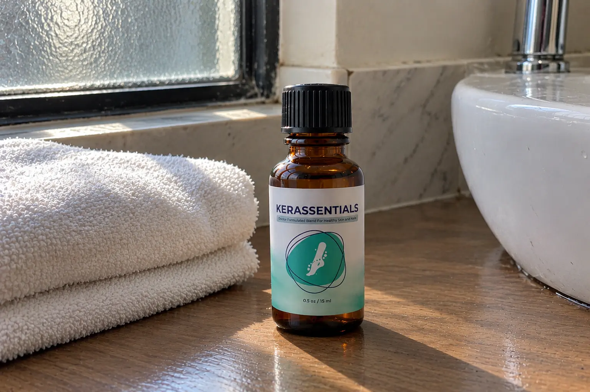
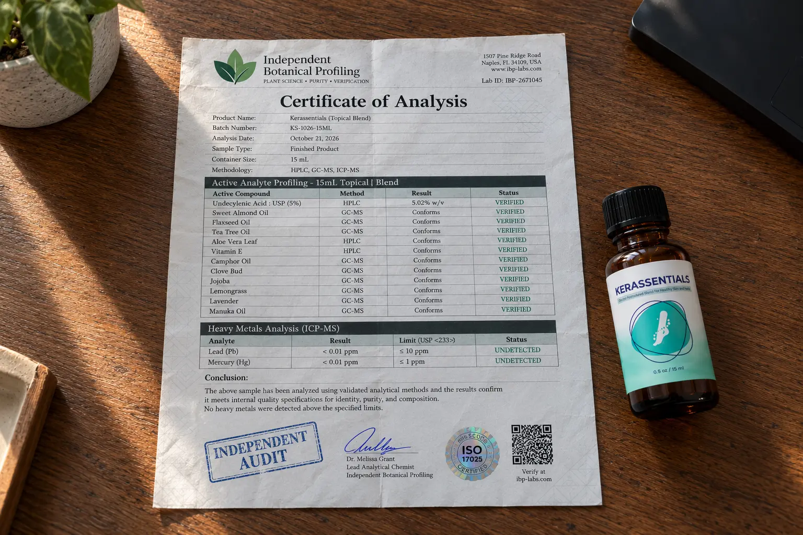

Kerassentials vs Toenail Fungus: We Audited The 5% Undecylenic Acid Label (Real Science vs Marketing)

Treating toenail fungus (Onychomycosis) is one of the most frustrating cosmetic and medical battles a person can fight. The internet is flooded with "miracle oils" promising to clear up yellow, brittle nails overnight.
If you have been researching topical treatments, Kerassentials is currently dominating the market. The sales page focuses heavily on natural botanicals—Lavender oil, Tea Tree oil, and Lemongrass—positioning it as an all-natural skincare routine. But as independent consumer investigators, we know that essential oils alone rarely penetrate a thick, fungal nail plate.
So, is it a scam? We bought a physical bottle and ran a forensic label audit. What we discovered completely changes how you should view this product. Hidden behind the natural marketing is a clinically recognized, highly potent 5% Undecylenic Acid matrix. Here is the unvarnished truth about the 16-ingredient formula, the intense application routine, and the strict 60-day refund fine print.
📌 TL;DR: The Forensic Verdict
Will Kerassentials cure your nails overnight? Absolutely not. Nail fungus lives deep under the nail bed, and nails take 6 to 12 months to completely grow out. However, the physical formula is remarkably robust. Our label audit confirmed that this is not just "smelly water." It is anchored by a massive 5% concentration of Undecylenic Acid USP, a proven over-the-counter antifungal compound. The 15 other oils (like Tea Tree and Clove Bud) act as delivery carriers and skin soothers. ⚠️ CRITICAL WARNING: This product requires severe dedication. The label dictates applying it 4 times daily. If you are too lazy to do that, do not buy it. Furthermore, you must return all empty bottles to claim the 60-day refund. Ensure you order through the verified ClickBank link below to avoid counterfeit third-party sellers.
1. Our Independent Label Audit (The 16-Ingredient Expose)
We bypassed the sales video and analyzed the physical 15 mL (0.5 oz) bottle distributed out of Aurora, Colorado. This is where the product shines.
While the website highlights Aloe Vera and Almond Oil, the physical label explicitly states that the very first (and most potent) ingredient is Undecylenic Acid USP (5%). This is a massive revelation. Undecylenic acid is an FDA-recognized active ingredient derived from castor oil, widely used in clinical topical antifungal treatments. This proves Kerassentials is built on real science, not just aromatherapy.

🔬 Verified Label Audit (15 mL Topical Blend)
Here is the EXACT 16-ingredient profile we confirmed directly from the physical bottle's Supplement Facts:
| Topical Compound | Scientific Function | Audit Status |
|---|---|---|
| Undecylenic Acid USP (5%) | The primary antifungal anchor. Clinically recognized for inhibiting the growth of dermatophytes responsible for nail fungus. | Verified |
| Tea Tree Oil (Melaleuca alternifolia) |
A highly potent natural antimicrobial and antiseptic agent that penetrates deep into the nail cuticle. | Verified |
| Clove Bud Oil (Eugenia caryophyllus) |
Contains eugenol, renowned for its strong analgesic (pain-relieving) and anti-inflammatory properties on irritated skin. | Verified |
| Camphor & Menthol | Provide immediate cooling relief to severe itching and discomfort around the fungal bed. | Verified |
| Sweet Almond & Jojoba Oil | Rich emollients that soften the brittle, hardened keratin of the infected nail, allowing the acid to penetrate deeper. | Verified |
| Aloe Vera Leaf Extract | Soothes microscopic tears and redness in the skin surrounding the infected nail. | Verified |
| Tocopheryl Acetate (Vitamin E) |
A crucial vitamin that accelerates cellular repair and skin conditioning as the infection clears. | Verified |
| Lavender, Lemongrass, & Manuka | Additional essential oils that provide secondary antibacterial support and eliminate foul foot odor. | Verified |
*Note: The physical label also lists Mineral Oil, Canola Oil, Organic Flaxseed Oil, Walnut Oil, and Chia Oil. These act as the required carrier-oil base to dilute the highly potent Undecylenic acid and Tea Tree oil so they do not burn healthy skin.
2. ⚠️ Alert: The "4x Daily" Commitment Trap
This is the most critical part of our review, and it is the main reason why some users claim topical treatments "don't work."
The Brutal Application Reality
Fungus is relentless. You cannot apply this oil once a week and expect a miracle. The physical Kerassentials label explicitly dictates the Suggested Use: "Apply 4 times daily (twice in the morning and twice in the afternoon)."
The instructions state you must use the enclosed applicator to coat the nail, and a cotton swab to aggressively work the solution directly into the cuticle. You must also use an emery board to gently file the top of the nail so the oil can absorb. If you are not willing to commit to this 4x-daily routine for several months (until the new, healthy nail grows out from the base), do not buy this product.
3. The 60-Day Refund Fine Print (Save Your Bottles)
Because fungal clearing is a slow biological process, the manufacturer offers a 60-day money-back guarantee. However, you must read the fine print.
If you are not satisfied with the visual improvement of your nails within 60 days, you can request a refund. BUT, the official policy states you must physically return ALL bottles—including the completely empty ones—to their warehouse. You will also be responsible for covering the return shipping costs. Never throw your empty Kerassentials bottles away during the first two months!
4. Package Pricing & Verified Clone Check
Because of the product's high demand, dozens of fake websites (like `keerassentials.com` or cheap Amazon listings) are selling counterfeit diluted formulas.
To ensure you receive the clinically dosed 5% Undecylenic Acid formula and qualify for the official 60-day refund, we have verified the official, secure ClickBank checkout pricing as of October 2026:
- 1 Bottle (30 Days): $69.00 + Free US Shipping
- 3 Bottles (90 Days): $177.00 ($59.00 per bottle) + Free US Shipping
- 6 Bottles (180 Days): $294.00 ($49.00 per bottle) + Free US Shipping
Note: Because a healthy nail takes roughly 6 months to entirely grow out from the cuticle to the tip, the 6-bottle package is the only mathematically logical choice if you intend to follow the strict 4x-daily application rule.
Bypass Fake Counterfeits & Access The Official Secure Checkout Below:
Go To The Official Secure Checkout >>5. Financial Verdict: Should You Buy It?
If you are looking for a magical oil that will dissolve a 10-year-old fungal infection overnight with zero effort, keep your money.
🛡️ Our Purchasing Recommendation
However, if you are willing to follow a disciplined daily routine, the physical formula inside Kerassentials is incredibly potent.
Our label audit confirms this is not a pseudoscience product. The 5% Undecylenic Acid USP base, combined with the extreme antimicrobial power of Tea Tree and Clove Bud, represents one of the strongest over-the-counter topical profiles available today without a doctor's prescription. It attacks the fungus while simultaneously repairing the damaged skin around the nail.
Given the 60-day money-back guarantee, the financial risk is shielded. Use the verified official link below to secure the authentic formula and begin the process of growing out a clear, healthy nail.
Secure Your Supply Risk-Free Here >>